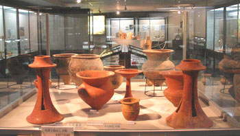
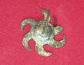

| 北九州は、畿内とともに日本古代史の重要な舞台であり、ロマンの世界である。２年間の横浜市歴史博物館のガイドボランティアの任期中から、「卒業旅行は九州だ」
と誰からともなく囁かれたのも道理。 個人的には、吉野ヶ里、太宰府周辺は何回か訪ねたが、今回は、稲作の起源を縄文時代にまで遡らせた板付遺跡、魏志倭人伝に記載されている伊都国、奴国、末蘆国に当ると考えられている遺跡など、私にとって初めて訪ねるところが多い。 幹事の尾田さん、鈴木さん以下１０人で、３泊４日の旅に出かけた。 （２００３年５月１１日〜１４日） |
||
| 吉野ケ里遺跡の復元物見櫓 |
| 北九州遺跡巡り地図 |
| １ 日 目 |
| 金 隈 遺 跡 |
| 金隈遺跡は、昭和４３年の春、桃畑の開墾作業中に発見され、昭和４７年に国の史跡に指定された。ここは弥生時代の共同墓地で、弥生時代前期の中頃（前２世紀）から後期の前半（２世紀）までの400年間の長い期間にわたって利用された。遺跡から、甕棺墓348基、土こう墓119基、石棺墓２基、人骨136体が発掘された。出土人骨から平均身長は、男162.7cm、女151.3cmで、戦前の日本人よりも高い。 今回の「北九州遺跡巡りの旅」では、まず金隈遺跡のおびただしい数の甕棺に度肝を抜かれた。 |
| 金隈遺跡にある甕棺展示館 |
館内には、甕棺墓91基、土こう墓34基、人骨3体が展示されている。 | |||
 |
 |
|||
| 弥生時代を年代的に５つに色分けした札が付けてあり分りやすい。墓は飽和状態 | 大小の甕棺 |
変った形の甕棺 |
| 板 付 遺 跡 |
| 板付遺跡では、昭和２５年に縄文時代最後の土器と弥生時代最初の土器が同時に発見された。昭和５３年には弥生時代の水田跡の下から、さらに古い縄文時代の水田跡が見つかった。さらに、縄文時代最後の土器とともに炭化米や石包丁も出土し、わが国の稲作の起源を縄文時代にまでさかのぼらせることとなった。 |
| 板付遺跡弥生館は、主に復元資料の展示である |
館内には、模型で弥生のムラが再現されている。水田の区画が予想外に小さい。 | |||
| 復元された水田 |
内環濠は、幅６ｍ、深さ３ｍ、直径約１０８ｍの卵形。この外側に用水路を兼ねた外環濠も見つかっている。 | 内環濠を渡ると復元された集落がある |
| 須玖・岡本遺跡群 |
| 明治３２年に甕棺の中から多数の銅鏡、銅剣、銅矛、銅戈が発見された。昭和になって発掘が進み、この遺跡は、志賀島金印でも知られる魏志倭人伝に登場する弥生時代中頃の奴国（なこく）の中心地と推定されている。付近の遺跡群からは、鏡や銅鐸の鋳型も発見され、当時のテクノポリスと考えられている。 |
| ２つの覆屋がある。覆屋の天井からは自然光が入り、観察しやすい。（多くの展示館は電灯） | 覆屋Ａ棟の内部 |
覆屋Ｂ棟の内部 |
 |
||||||
| 奴国の丘歴史資料館 | 出土した中細形銅戈（どうか） | 鏡の鋳型 | 小銅鐸の鋳型 |
| 水 城 跡 |
| 平野の北西の出入口を塞ぐように木立に覆われた丘が続く。これが６６４年に唐と新羅の攻撃に備えて築かれた防衛施設「水城（みずき）」である。この土塁は全長１．２ｋｍ、基底部の幅８０ｍ、高さ１４ｍに及ぶ。 |
| 昭和５０年の発掘調査で木樋を使った堀の遺構が発見され、水城の名の由来が実証された （右上の木樋は、九州歴史資料館で撮影） |
||||
| 九州歴史資料館 |
| 福岡県立九州歴史資料館は、北九州の歴史とその特質を明らかにするために、昭和４８年に開館された。展示品に、５７年に後漢光武帝より弥生時代の奴国の王に下賜された「漢委奴国王」の金印（レプリカ）がある。（本物は福岡市博物館） その他、銅滓や鉄滓（本物）があり、古代の冶金技術を知る上で興味があった。 |
|  | ||
| 資料館正面 我々の小型観光バスが止っている |
丹塗磨研土器 朱は硫化水銀を含む顔料、丹は酸化鉄を含む顔料だが、必ずしも区別されていないようだ。 |
| 銅滓 | 金印（虫メガネを通して撮影） | |||
| 大きくて肉薄の甕棺を製作するのは、 大変高度な技術 |
鉄滓 |
金印（虫メガネと鏡 を通して撮影） |
| 観 世 音 寺 |
| 観世音寺は、天智天皇が母斉明天皇の冥福を祈るために創建されたもので、完成したのは、天平１８年（７４６）である。その規模は七堂伽藍を配置した西日本随一の壮大さを誇っていたが、現存するのは日本最古の梵鐘(国宝）のみである。この梵鐘は京都妙心寺のものと兄弟鐘といわれる。都府楼（大宰府政庁）で謹慎の身を詠んだ菅原道真の漢詩でも有名である。宝蔵には天平･鎌倉時代の４〜５ｍの巨大な仏像が展示されている。 都府の楼にはわづかに瓦の色を看る 観音寺はただ鐘の声をのみ聴く |
 |
||||
| 江戸時代の初めに再建された講堂 | 日本最古の梵鐘 | |||
| 二 日 市 温 泉 |
| 初日の宿は二日市温泉の大正時代に建てられた旅館。高浜虚子が好んだ宿という。 | ||
| ２ 日 目 |
| 大 野 城 跡 |
| 博多湾から攻めてくる唐･新羅連合軍を阻止するための水城が造られた翌年の６６５年に、大宰府の北の守りとして、南の基肄（きい）城とともに築かれたのがこの大野城。百済から渡来した技術者の指導で造られ、約８ｋｍにわたる土塁や石垣で山頂部を囲み、その中に建物を置いた。現在、倉庫跡と思われる礎石が約７０棟分、山中に点在している。四王寺山には、後に四天王が祀られ、山の名となった。 |
| 上の画像をクリックすると大きくなります。 その後ブラウザの[戻る]をクリックすれば、この 頁に戻れます。（数秒かかることがあります） |
７０棟分あるという倉庫跡の一部の礎石が見つかった |
{kind=link}
| 大宰府天満宮 |
| 菅原道真（８４５−９０３）は平安前期の学者･政治家で、宇多天皇・醍醐天皇の信任厚く、文章博士、蔵人頭などを歴任し、右大臣までなったが、９０１年に藤原時平の讒訴（ざんそ）により大宰権師（ごんのそつ）に左遷され、翌々年に配所の大宰府で亡くなった。死後は、学問の神様、天神様として、全国各地に祀られ、広く民衆に信仰されている。 大宰師（そち）が大宰府の長官であるのに対して、大宰権師はどんな役職だったのだろうか。親王が大宰師に任命されると実際には現地に赴任しない遥任官（ようにんかん）となることが多い。とすると、大宰権師は現地の最高責任者ということになるが、実態は高位高官の左遷後のポストであったらしい。道真に限らず権力争いに破れた高官が大宰権師として左遷された例が多い。 |
| 本殿は重要文化財である |
本殿の向かって右にある梅が「飛梅」。菅原道真を慕って、都から一夜で飛んできたという。 | |||
| 太宰府天満宮の名物といえば、「梅ケ枝餅」。抹茶セットに、しばし心が和む。 | ||
| 大宰府政庁跡 |
| 今回の北九州遺跡巡りの旅でミスがあったとすれば、大宰府政庁跡を踏まなかったことだろう。魔が差したというべきか、車で通り過ぎてしまったのである。 幸い昨年の秋に私が訪ねたときのホームページがあるので、下記をクリックしてご覧下さい。ご覧になった後は、ブラウザの[戻る]で、このホームページにお戻り下さい。（数秒かかることがあります） |
||
|
||
| 車窓から一瞬見た大宰府政庁跡 |
| 因みに、「だざいふ」には「大宰府」と「太宰府」の２通りの漢字が当てられる。「筑紫大宰」という官職名は「日本書紀」に初見するが、「オホミコトモチ」と読まれた。その後、官衙（役所）名として「大宰府」ができ、古文書の官印は「大宰府」であった。後世これが転じて、現行の市名や天満宮には「太宰府」が用いられている。 |
| 吉野ヶ里遺跡 |
| 吉野ヶ里遺跡では、前３世紀から３世紀まで６００年間続いた弥生時代のすべての時期の遺構・遺物が見つかっている。吉野ケ里歴史公園は「弥生時代後期後半（３世紀頃）」を復元対象時期として、主祭殿、物見櫓、住居などを復元し、平成１３年に開園した。 |
| ディズニーランドか何かのテーマパークのような立派な公園センター。１０年前に訪ねたとき、発掘現場に足を踏み入れたのが懐かしい。 | 内環濠を通って南内郭に入る。外環濠は公園を大きく取り巻いているが、見学できない。門に飾られた木の鳥は、穀物の霊を運ぶ「神の使い」とされていたという。 |
| 物見櫓の見えるところでガイドさんと一緒に記念写真。歴史ガイドの苦労話に親近感を感じる。 |
北内郭には、吉野ヶ里のクニの重要なことを決めたり、祖先の霊を祀る主祭殿がある |
さらに北には甕棺墓列、祀堂、北墳丘墓列がある。発掘された甕棺は２０００基を越え、吉野ヶ里全体で１５０００基が埋まっていると想定される。 |
| 展示室はプレハブ建屋の粗末なもので、めぼしいものはないが、赤米、炭化米、石包丁の使い方が展示されていた。 | ２００基以上出土したという甕棺の一部 |
首のない人骨 上は発掘時の写真。下は展示された模型（なぜか着物を着せてある） |
| 武 雄 温 泉 |
 |
下の献立をクリックすると、拡大して見れます。 その後ブラウザの[戻る]をクリックすれば、この頁に戻れます。（数秒かかることがあります） |
|||
| 武雄温泉の楼門と新館は、辰野金吾（東京駅を設計した唐津出身の建築家）の設計で、大正４年に竣工した木造建築。 | ２日目の宿は、明治時代に建てられた老舗の旅館。板前自慢の懐石料理は品数が多いことに驚く。 |
|||
{kind=link}
| ３ 日 目 |
| 有田陶芸体験 |
| 有田陶賓館で陶芸を体験した | ||||
| 九州陶磁文化会館 |
| 伊万里･有田の美麗なやきものは、１７世紀初めの秀吉の朝鮮出兵の際に渡来した李朝の陶工李参平が有田の地に良質な陶石を発見したことに始まる。以後、鍋島藩の御用窯保護奨励と陶工の努力により、艶やかな白磁と鮮やかな彩色の名品が数多く生産され、伊万里港から世界に輸出された。 佐賀県立九州陶磁文化会館には、蒲原コレクション、柴田コレクションなど貴重な収集品が展示されている。ここでは、「陶器の歴史」から五品を選んで簡単に解説しよう。 |
| １６１０〜２０年代 有田焼が始まった頃のもの。素地まだあまり白くない。 |
１６７０〜８０年代 江戸時代で最も繊細で優美なものが作られた頃。 |
１６９０〜１７２０年代 江戸時代で最も派手で豪華なものが作られた頃。びっしりと文様が描かれた。 |
１７５０〜８０年代 たこの足ような唐草文様がこの頃盛んに描かれた。 |
１８３０〜６０年代 全面を埋める繊細な唐草文様や赤地に金彩のシダの葉唐草文様が年代の決め手となる。 |
| 鵜 殿 石 仏 群 |
| 唐で修行を終えて帰国した空海が三尊を刻んだのが始まりと伝えられる。 大小６０余体の磨崖仏が見られるが、制作時期は明らかではない。 |
||
| 久里双水古墳 |
| 古墳時代初期、３世紀半ばから４世紀はじめに、日本最古級の大型前方後円墳が作られた。魏志倭人伝に記載されている末蘆国の首長墓ともいわれている。 |
| 全長１０８ｍ、左の後円部径６２ｍ、右の前方部幅４３ｍの前方後円墳 | 石室レプリカ展示室 |
| 名 護 屋 城 跡 |
| 朝鮮侵略をもくろんだ豊臣秀吉が、わずか５ヶ月で築城させた名護屋城は、秀吉が起こした文禄・慶長の役（1592年〜1597年）と足掛け７年に及ぶ朝鮮への侵略戦争の拠点だったところである。 この戦争には、当時全国の主だった諸大名のほとんどが参集し、名護屋城の周囲３Km内に百数十もの陣屋を築いていた。今では、石垣などだけが残り、当時の面影を偲ぶことはできないが、当時、名護屋城は大阪城に次ぐ規模で、最盛期の城下町には10万人を超す人口を誇っていた。 |
| 県立名護屋城博物館は史跡を保存し朝鮮との交流の歴史を紹介する |
博物館内の名護屋城の模型 手前中央が天守台、前方中央が徳川家康陣 |
秀吉の野望を打ち砕いた李舜臣の率いる亀甲船の模型 |
| 大手口 生憎の雨の中を登る |
東出丸からの眺め 前方中央が徳川家康陣跡 |
この天守台に、五層七階の天守閣が建っていたという。 |
| いろは島温泉 |
| ３日目の宿は、いろは島の国民宿舎。晴天なら４０余の島影が見えるのだが--- | ||
| ４ 日 目 |
| 唐津くんち曳山展示場 |
| 唐津神社の秋祭り行事の「唐津くんち」には壮快無比な曳山が巡行される。曳山は古くは宝歴年間（１７６０年頃）に奉納されたといわれる。１５台のうち現存するものは、文政２年（１８１９）から明治９年（１８７６）に作られた１４台である。国指定の重要無形民俗文化財となっている。 |
| 曳山展示場は唐津神社の隣にある | ||
| １４台の曳山が並んでいるのは壮観である | ４番曳山 源義経の兜 | １３番曳山 鯱 |
| 末蘆館・菜畑遺跡 |
| 昭和５４年の菜畑遺跡の発掘調査で、日本最古の農工具、水田跡、炭化米が発見され、２５００年〜２６００年前に日本で稲作が行なわれていたことが証明された。魏志倭人伝に記載されている末蘆国に因んで末蘆館が建てられている。 |
| 多紐細文鏡 中国東北部や朝鮮にみられるもの |
||||||
|  | ||||||
| 末蘆館 |
復元赤米は草丈が長い（短い方はもち米）。倒れないように育てる苦労が偲ばれる。右は炭化米。 | 巴形銅器 武具につけられた護符 |
||||
| 末蘆館に隣接する菜畑遺跡では、支石墓、復元竪穴住居、復元水田などを見ることができる。 | ||||
| 虹ノ松原・車内光景 |
| 唐津湾に沿った虹の松原を通過 |
２０人乗の小型観光バスを１０人で使うのでゆったり。後部のサロンではこんな光景も |
| 志登支石墓群 |
| 志登支石墓群は、弥生前期から中期に及ぶ墓地遺跡である。昭和２８年の発掘調査で、支石墓１０基と甕棺８基が確認された。支石墓の上石は玄武岩及び花崗岩で、西方４ｋｍの可也山（３６５ｍ）のものも使用されている。 |
| 遺跡は海抜６ｍの平地の水田にある。バスのドライバーは狭い農道を入ってくれた。三角形の山は可也山。 | ||
| 伊都歴史資料館・平原遺跡 |
| 佐賀県に接し玄海灘に突き出した位置にある福岡県前原市の糸島地方は、魏志倭人伝に記載されている伊都国と推定されている。 昭和４０年以来の発掘で、東西１８ｍ、南北１４ｍの方形周溝墓の存在がわかり、日本最大級の銅鏡（直径４６．５ｃｍ）を含む４０面の銅鏡、勾玉、太刀などが出土した。 |
| 資料館に展示されている中で、日本最大級の大銅鏡は圧巻である。（撮影禁止のためパンフレットより複写） | ||||
| 平原遺跡の方形周溝墓の上に立つと、春分秋分の時期に向こうの山の峠（最も低いところ）から太陽が出るという。伊都国の女王が祭祀を行なう姿が想像される。 | ||
| 元 寇 防 塁 跡 |
| １２７４年元軍が博多湾に攻め込み、西部に上陸し鎌倉幕府の御家人たちと激しく戦った（文永の役）。幕府は再度の来襲に備えて１２７６年３月から約半年で、西は今津から東は香椎まで博多湾沿い約２０ｋｍにわたる石築地（元寇防塁）を築いた。１２８１年元は再び攻めてきたが、防塁に阻まれて上陸できなかった（弘安の役）。 元寇防塁は昭和６年に国の史跡に指定され、現在、今津、生の松原、西新の三地区が保存されている。 |
| 今津地区の防塁は石積みの幅が下は３ｍ、上が２ｍ、高さ３ｍ。長さ２００ｍにわたり復元されている | ||||
| 北九州は、日本古代史の重要な舞台であり、ロマンの世界である。再び訪ねることを願って、福岡空港から帰途についた。 企画して下さった尾田さん、楽しい旅を演出して下さった仲間の皆さん、有難うございました。 |
| 投稿の一覧表 に戻る |